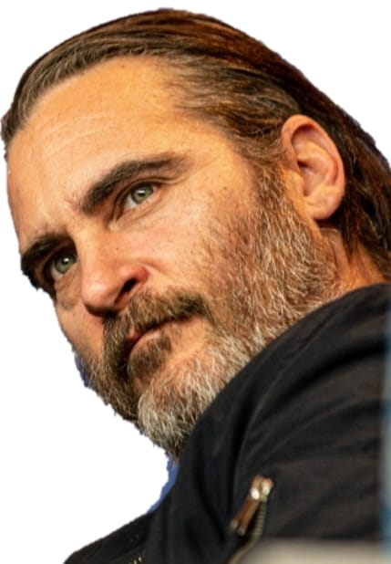

FILM ACTOR
PRODUCER
ANIMAL RIGHTS ACTIVIST

Phoenix made his feature film debut in the adventure film SpaceCamp (1986) as a young boy who goes to Kennedy Space Center to learn about the NASA space program and undergoes amateur astronaut training. He guest starred in the anthology series Alfred Hitchcock Presents episode "A Very Happy Ending" in the same year, playing a child who blackmails a hitman (played by Robert Loggia) into killing his father (John Aprea). Phoenix's first starring role was in the direct-to-video film Russkies (1987), about a group of friends who unknowingly befriend a Russian soldier during the Cold War. In 1989, Phoenix co-starred as Garry, the withdrawn teenage nephew of Steve Martin's character in Ron Howard's comedy-drama Parenthood (1989). The film was box office success, grossing $126 million worldwide against its $20 million budget.On October 31, 1993, River died of an overdose outside The Viper Room in West Hollywood. Phoenix, who had accompanied his brother and older sister Rain to the club, called 911 to seek help for his dying brother. After the death, the phone call was repeatedly broadcast on TV and radio shows. The family retreated to Costa Rica to escape the media glare as the event came to be depicted as a cautionary tale of young Hollywood surrounded by mythology and conspiracy.
In 1995, Phoenix returned to acting in Gus Van Sant's black comedy To Die For, based on the novel of the same name by Joyce Maynard, which in turn was inspired by the Pamela Smart murder case. Phoenix starred as Jimmy Emmett, a disturbed young man who is seduced by a woman (Nicole Kidman) to commit murder. The film premiered at the 1995 Cannes Film Festival and became a financial and critical success, with New York Times critic Janet Maslin praising Phoenix's performance, writing "So pity poor Jimmy. Rivetingly played by Mr Phoenix with a raw, anguished expressiveness that makes him an actor to watch for, Jimmy is both tempted and terrified by Suzanne's slick amorality. In that, he speaks for us all." In 1997, Phoenix played a small-town troublemaker in Oliver Stone's U Turn, and a poor man in love with a rich woman in Inventing the Abbotts. The films were received with mostly mixed and negative reviews, respectively, and neither performed well at the box office. The following year, Phoenix starred in Clay Pigeons as a young man in a small town who befriends a serial killer. The film was released to a dismal box office performance was not well received by critics. In his next film, 8mm (1999), Phoenix co-starred as an adult video store employee who helps Tom Welles (Nicolas Cage) investigate the underworld of illegal pornography. The film turned out to be a box office success, grossing $96 million worldwide, but found few admirers among critics.
In 2000, Phoenix co-starred in three films. In the first of these, he portrayed a fictionalized version of Roman Emperor Commodus in Ridley Scott's historical epic film Gladiator. The film received positive reviews and grossed $457 million worldwide, making it the second highest-grossing film of 2000. Chris Nashawaty of Entertainment Weekly called Phoenix's work "a more nuanced star-making performance" when comparing him to the lead Russell Crowe, writing "Phoenix turns what could have easily been a cartoonish villain into a richly layered study of pathology." Phoenix earned first nominations for an Academy Award, a Golden Globe Award and a BAFTA Award in the Best Supporting Actor category. He and late brother River became the first brothers to be nominated for acting Academy Awards. To date they are the only brothers to hold this distinction. His next film marked his first collaboration with director James Gray in The Yards. The crime film follows the corruption in the rail yards of Queens. Although failing to perform well at the box office, The Yards received positive reviews from critics with many considering Phoenix's performance as the villain a stand out. The third release of 2000 was Philip Kaufman's Quills, a satirical thriller inspired by the life and work of the Marquis de Sade. Phoenix portrayed the conflicted priest Abbé de Coulmier opposite Kate Winslet.
Phoenix's first producing task was the action thriller We Own the Night (2007), in which he played nightclub manager Bobby Green/Grusinsky who tries to save his brother (Mark Wahlberg) and father (Robert Duvall) from Russian mafia hitmen. The James Gray-directed film premiered at the 2007 Cannes Film Festival to mixed reviews; Roger Ebert praised Gray's direction and the acting, but criticized its screenplay for lack of originality. David Edelstein of New York Magazine commended Phoenix for elevating the film's conflict, writing that it "might be heavy-handed without Phoenix’s face—his irresolution somehow more powerful than other actors’ resolve. There is no artifice. He's not an actor disappearing into a role but a man disappearing into himself Phoenix homes in on the truth of this person. It's the paradox of the greatest acting". Later that year, he played a father obsessed with finding out who killed his son in a hit-and-run accident in his second feature with Terry George, the crime drama film Reservation Road. The film received mixed reviews from critics; Peter Travers praised Phoenix's acting stating "Even the best actors – and I'd rank Joaquin Phoenix and Mark Ruffalo among their generation's finest – can't save a movie that aims for tragedy but stalls at soap opera." Phoenix also executive produced the television show 4Real, a half-hour program which began airing in 2007. The series showcased celebrity guests on global adventures "in order to connect with young leaders who are creating social and economic change".
Phoenix and Gray's fourth collaboration came with The Immigrant (2013), a drama film in which he played the supporting role of a pimp who prostitutes Polish immigrant Ewa (Marion Cotillard) and ends up falling for her. The Immigrant and his performance premiered to highly positive reviews at the 2013 Cannes Film Festival.[94] In his review, Ignatiy Vishnevetsky of The A.V. Club thought the film featured one of his best performances and commended Phoenix's and Gray's developing work, writing of that "the two are so perfectly in sync, that it’s hard to tell where Phoenix’s performance ends and Gray’s visual style[...]—begins", further lauding their development of Bruno into "a fully fledged tragic character, even though he is neither the protagonist of The Immigrant nor the main driving force behind its plot."[95] His next feature film of that year was the Spike Jonze-directed romantic science-fiction drama Her.
The third film of 2018 was The Sisters Brothers, Jacques Audiard's adaptation of the novel of the same name by Patrick deWitt. The film starred John C. Reilly and Phoenix as the notorious assassin brothers Eli and Charlie Sisters respectively and chronicles their chase after two men who have banded together to search for gold. Writing for Roger Ebert's website, Tomris Laffly commented on Phoenix's and Reilly's "tremendous chemistry" and Lindsey Behr of the Associated Press opined that the duo "excellently manage all the various tones in the film". Also in 2018, he collaborated with Rooney Mara and Sia to narrate Chris Delforce's documentary Dominion. Animal rights activists have called it one of the most powerful documentaries ever made. For his contribution to the documentary, Phoenix was granted the 2018 Award of Excellence for Narration by Hollywood International Independent Documentary Awards
In 2019, Phoenix starred as the DC Comics character Joker in Todd Phillips's psychological thriller Joker; an alternative origin story for the character. Set in 1981, the film follows Arthur Fleck, a failed clown and stand-up comedian whose descent into insanity and nihilism inspires a violent counter-cultural revolution against the wealthy in a decaying Gotham City. Phoenix lost 52 pounds (24 kg) in preparation,[ and based his laugh on "videos of people suffering from pathological laughter."Released to critical acclaim at the 76th Venice International Film Festival,[ the film experienced a polarized critical reception after its theatrical release. While Phoenix's performance received rave reviews, the dark tone, portrayal of mental illness, and handling of violence divided opinions and generated concerns of inspiring real-life violence; the movie theater where the 2012 Aurora, Colorado mass shooting occurred during a screening of The Dark Knight Rises refused to show it. Despite this, Joker became a box office success grossing over $1 billion (against its $55 million production budget), the first and only R-rated film to do so, becoming Phoenix's highest-grossing film.